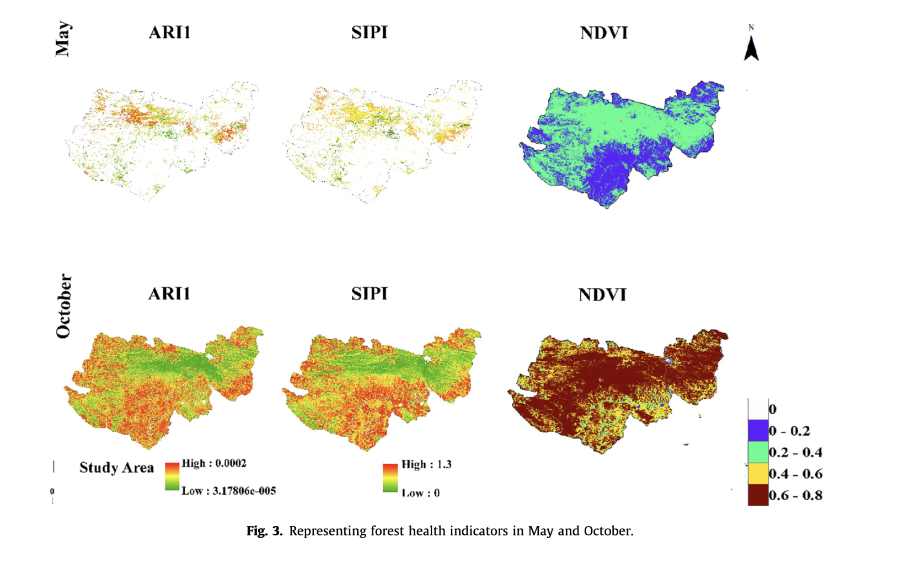

1 Introduction to Remote Sensing
1.1 Summary
1.1.1 Learning Objectives
Have a basic idea of remote sensing
Have a understanding of remote sensing data
1.1.2 Remote Sensors
A remote sensor system it the instrument designed to detect and measure physical phenomena or environmental conditions from a distance. Remote sensors could be divided into two types as follow:
Passive sensors systems: receive reflected energy
Active sensors systems: emit electromagnetic waves, such as SAR
1.1.3 Electromagnetic waves
The electromagnetic waves are used by remote sensors to detect and measure physical phenomena, also the carriers of information.
The basic properties of electromagnetic waves include wave length(\(\lambda\)), velocity( \(c\), rate of oscillation), frequency(\(v = 3\times10^8 m/s\)). They follow the relationship that \(\lambda = c/v\).
1.1.3.2 Interactions with Earth
When the electromagnetic waves travel to reach the ground stations or remote sensors, they would be affected by Earth’s atmosphere or surface.Thus, it’s important to know how would the Earth’s surface or atmosphere would change the radiant energy.
1.1.3.2.1 Interactions with Earth’s atmosphere
Some of the particles or molecules in the air would absorb part of electromagnetic waves, while others would change the direction of electromagnetic waves, and this phenomenon is called atmospheric scattering.
There are three types of atmospheric scattering:
Rayleigh scattering:
It happens when particles are very small compared to the wavelength.
Smaller wavelengths scatter easier, like blue light would scatter more than red light and yellow light. That’s why we would the sky is blue in the daytime, and the sun is yellow and red when sunset as the sun’s angle changes and the light should travel through more Earth’s atmosphere so that more blue light is scattered out.
Mie scattering:
It happens when the particles’ diameters are equal to the wavelength.
Non selective scattering:
It happens when the particles are much larger than the wavelength. For example, the clouds would scatter the visible light of the solar radiation. And that’s the reason why we could see the clouds are white in remote sensing images.
1.1.3.2.2 Interactions with Earth’s surface
After the solar radiation reached the Earth surface, it would either be absorbed, transmitted or reflected. As for remote sensing, the reflected electromagnetic waves could tell use the characteristics of the Earth’s surface.
Several types of surface interactions: Bidirectional Reflectance Distribution Function (BRDF), Polarization, Fluorensence
1.1.4 Remote Sensing Data
1.1.4.1 Data formats
Mostly remote sensing data is stored in raster, and the file formats usually include GeoTiff and HDF, etc.
1.1.4.2 Four resolutions
Remote sensing data are based on four resolutions
Spatial Resolution: The size of the raster cells.
Spectral Resolution: The number of bands it records data in.
There are several concepts related to spectral resolution:
spectral signatures:
We take values for each wavelength across the electromagnetic spectrum to create a spectral signature. Every feature on earth have a unique spectral signature
atmospheric window:
The observable wavelengths ranges that are not absorbed by the atmosphere and are transmitted through the atmosphere. Water vapour, ozone, carbon dioxide and atmospheric molecules blocks 100% of the gamma rays, x-rays, and most ultra-violet light.

Radiometric Resolution: The ability of a sensor to identify and shows small differences.
Temporal Resolution: The revisit time of the sensor.
1.2 Application
We have already known that each object on the Earth has their own spectral signature, and it is also real that the same object in different status would have different spectral signatures, like healthy tree would show different colors compared to pest-infested trees. In this way, one important application of spectral indicators is forest monitoring.
Gupta and Pandey (2021) developed a systematic approach using Sentinel-2A spectral images to measure the forest health. The workflow could be seen as below.
In terms of data collection and preprocessing, Gupta and Pandey (2021) collected Sentinel 2A data in May and October 2019, and resampled the data into 30m, then performed atmospheric correction. At the same time, they convert the digital numbers of top-of-atmosphere reflectance into bottom-of-atmosphere, which is the true surface reflectance.
Then, they used reflectance estimation to calculate ARI 1, which shows signs of stressed related to pigments. They applied the Near Infrared(NIR) band to calculating the NDVI so that greenness vegetation are measured. The structure insensitive pigment index were also calculated. These three index were all calculated from spectral bands(see as follows). Canopy chlorophyll content is based on the inversion of PROSAIL.

Finally, all the four index combined together to calculate the comprehensive Forest Health index. As we can see the figure below, different colors show various health conditions of the forest. The reddest area shows that the forests of this area are in poorest health, while the greenest area’s forests are the healthiest.